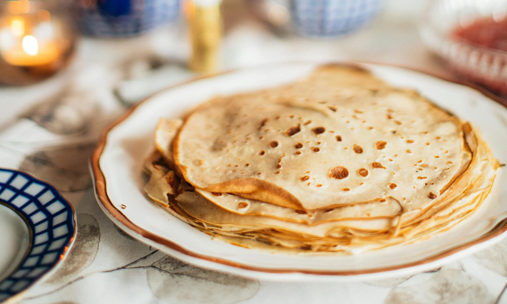
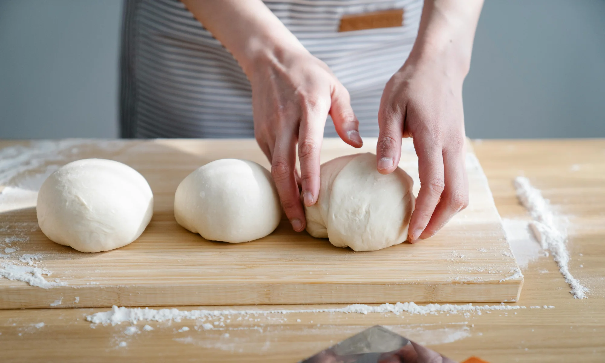

Recettes de cuisine 🍴
Découvrez ces délicieuses recettes 😋
Chakchouka aux pois chiches

Description : Un plat savoureux avec oeufs cuits dans une sauce tomate épicée
Durée : Moyennement long
Difficulté : Facile
Régime : Végétarien
Crêpes maison
Description : De délicieuses crêpes fines et moelleuses à garnir à votre goût
Durée : Moyennement long
Difficulté : Facile
Régime : Végétarien
Pâte à pizza italienne
Description : Une pâte à pizza authentique, légère et croustillante
Durée : Rapide
Difficulté : Facile
Régime : Vegan
Suivez ce lien pour créer une nouvelle recette